Aldridge Education
The trust’s secondary schools on Value Added v2.1: what they add, attendance, place, how each compares with schools like it, and targets that start from each school’s intake.
ImportantIn short
- 8 secondary schools in four places: Darwen (Darwen Aldridge, Darwen Aldridge Enterprise Studio and Darwen Vale High), Brighton and Hove (Brighton Aldridge and Portslade Aldridge), London (Duke’s Aldridge) and Greater Manchester and Cheshire (AldridgeUTC@MediaCityUK and UTC Warrington).
- Value added. Over 2021/22 to 2024/25, 2 schools add clearly more than their intakes predict for all pupils, and 2 clearly less; the rest are within the margin of error. The strongest are Portslade Aldridge and Brighton Aldridge.
- Attendance is the common thread. Every school’s absence is above what its intake predicts, by 0.3 to 6.0 points. Bringing it down to the level the intake predicts would, on the v2.1 model, be worth about 0.3 to 3.3 Attainment 8 points for disadvantaged pupils.
- Targets that start from the intake. For each school and group the page sets three: keep the value the school already adds, match the better quarter of the ten schools in England most like it, and reach England’s top tenth. Each is the model’s expected Attainment 8 for the latest intake plus that much value added. See targets.
- Where the points are, and who to ask. For each school the page ranks the things it can work on (attendance, English, maths, the EBacc and open subjects, filling the slots) by what matching the better of schools like it would be worth, and names similar schools doing well on each, to talk to. See levers.
- Every figure is from published data. The method is at the end and in the methodology.
The schools
| School | Area | Ages | Pupils | FSM | Attainment 8 | All pupils | Disadvantaged | Non-disadv. | Absence vs intake | Ofsted |
|---|---|---|---|---|---|---|---|---|---|---|
| Darwen Aldridge Community Academy | Blackburn with Darwen | 11 to 19 | 1,065 | 31% | 38.1 | -3.7 (-5.4 to -2.1) | -4.8 (-7.0 to -2.3) | -3.4 (-5.2 to -1.4) | +2.6 | Good |
| Darwen Aldridge Enterprise Studio | Blackburn with Darwen | 13 to 19 | 264 | 56% | 35.1 | -0.8 (-2.3 to +0.7) | +3.1 (+0.6 to +5.8) | -3.1 (-4.8 to -1.4) | +2.3 | Expected standard |
| Darwen Vale High School | Blackburn with Darwen | 11 to 16 | 1,071 | 31% | 43.4 | +1.1 (-0.7 to +3.0) | -0.4 (-3.0 to +2.5) | +1.7 (-0.4 to +3.8) | +1.5 | Good |
| Brighton Aldridge Community Academy | Brighton and Hove | 11 to 19 | 813 | 53% | 36.8 | +2.2 (+0.7 to +3.8) | +2.4 (+0.1 to +4.9) | +2.6 (+0.8 to +4.5) | +3.7 | Good |
| Portslade Aldridge Community Academy | Brighton and Hove | 11 to 16 | 928 | 30% | 45.9 | +3.1 (+1.2 to +5.1) | +0.7 (-2.0 to +3.5) | +3.4 (+1.2 to +5.6) | +2.1 | Expected standard |
| Duke's Aldridge | Haringey | 11 to 16 | 965 | 49% | 40.2 | +0.7 (-1.0 to +2.4) | +3.3 (+0.4 to +6.4) | -1.6 (-3.4 to +0.4) | +1.7 | Good |
| AldridgeUTC@MediaCityUK | Salford | 13 to 19 | 456 | 46% | 40.4 | -0.9 (-2.6 to +0.9) | +3.0 (+0.2 to +6.0) | -2.7 (-4.6 to -0.8) | +0.3 | Good |
| UTC Warrington | Warrington | 14 to 19 | 296 | 53% | 27.2 | -5.9 (-7.1 to -4.7) | -2.9 (-4.7 to -0.9) | -7.2 (-8.5 to -5.8) | +6.0 | Good |
Three of the schools take pupils from 13 or 14 (Darwen Aldridge Enterprise Studio, AldridgeUTC@MediaCityUK and UTC Warrington). Their value added is measured the same way, against the KS2 results of the pupils they teach, but they are compared with each other and with schools like them, not with 11 to 16 schools, in the look-alikes.
Value added
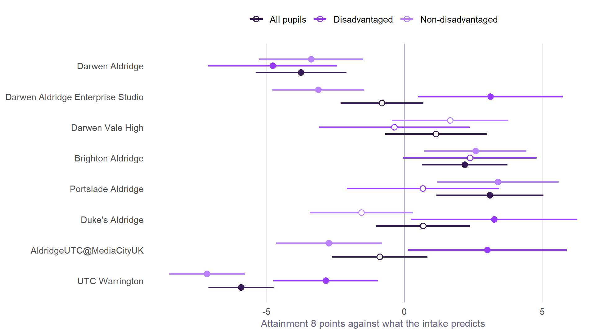
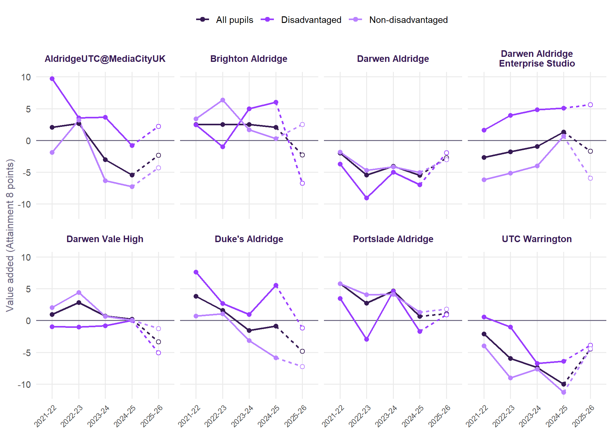
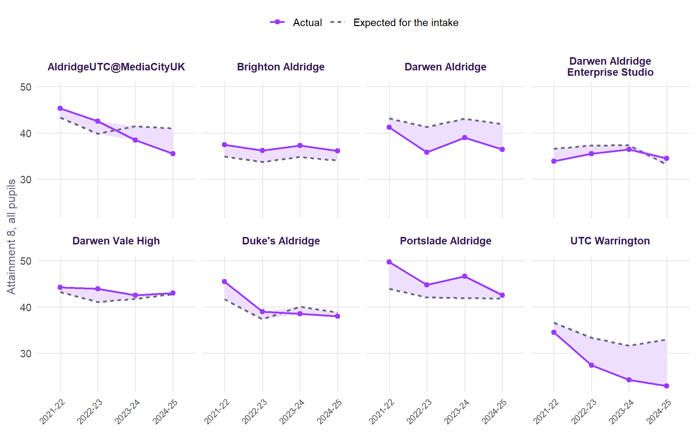
Value added and attendance
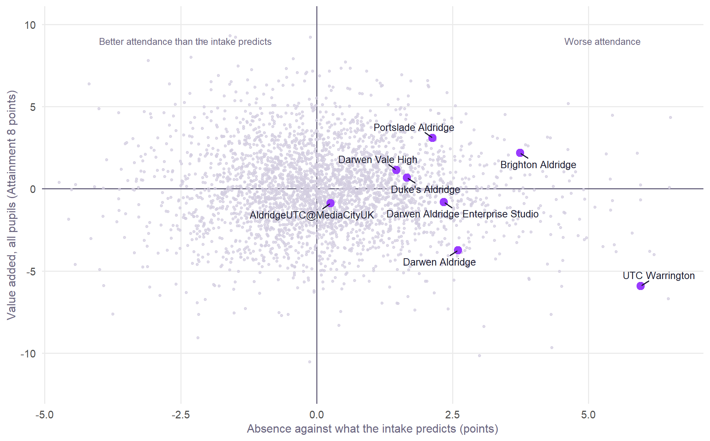
Every school sits to the right of the line: its pupils miss more school than pupils with similar characteristics elsewhere. Several still add value, which says the teaching is doing well despite attendance, not because of it. Absence is part of the model, so value added already allows for it; the targets show what bringing it down would be worth on top.
Intakes
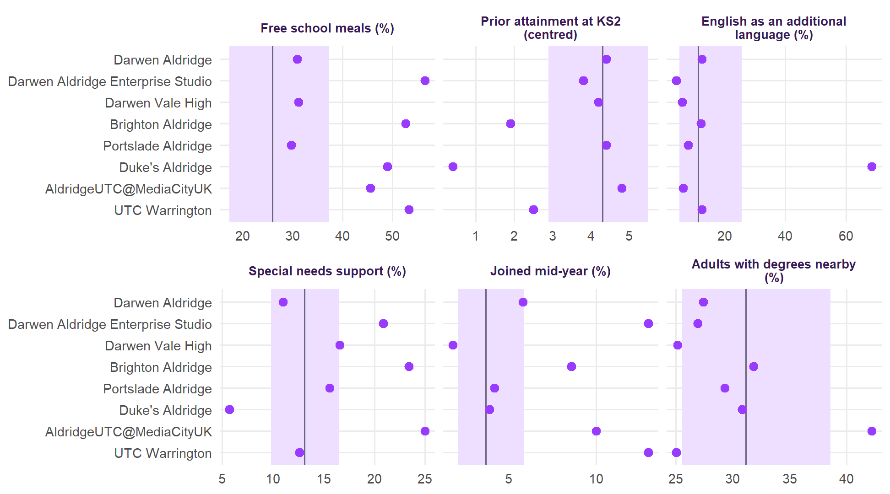
These are the intakes the targets start from. Most of the trust’s schools have far more pupils on free school meals than the typical English school, and several have lower prior attainment. Value added already allows for all of this: it is measured against what pupils like these achieve elsewhere.
What explains the results
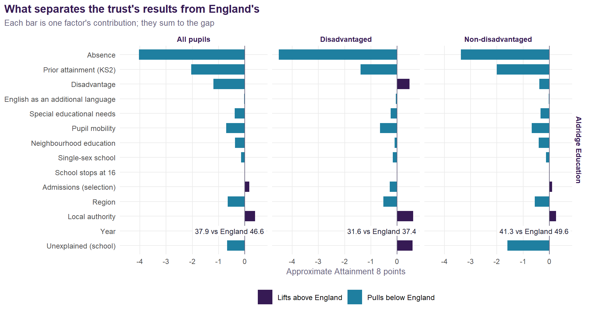
Place
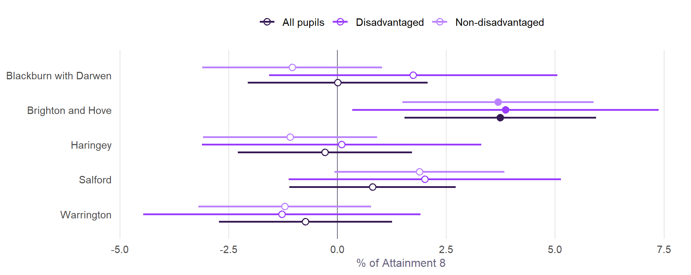
Place matters, and it is not in the schools’ gift. Where the authority effect is negative, schools there start behind; where it is positive, part of a school’s results reflects its area. For Brighton and Hove, the geographical effects page shows the city’s effect is largely one of attendance, and the distance page that children in the city’s most deprived neighbourhoods face the longest journeys to school of any mostly urban authority in England. Brighton Aldridge Community Academy’s catchment, in the north-east of the city, includes some of its most deprived neighbourhoods.
Targets
A target that ignores intake rewards schools with advantaged pupils and punishes the rest. These start from what the v2.1 model expects for each school’s own pupils, and add value at three levels:
- Keep what the school adds: the latest intake’s expected Attainment 8, plus the school’s own four-year value added.
- Match the better of schools like it: plus the value added of the upper quartile of the ten schools in England most like it on intake and setting (below), or its own if higher.
- Reach England’s top tenth: plus the value added of England’s top tenth of schools for that group (+3.2 for all pupils), or its own if higher.
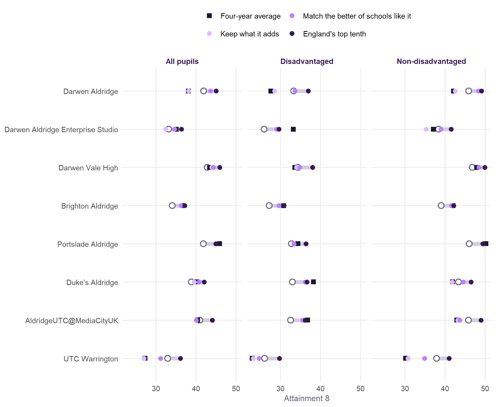
| School | Group | Four-year average | Expected, latest intake | Keep what it adds | Better of schools like it | England's top tenth | Year-to-year spread |
|---|---|---|---|---|---|---|---|
| Darwen Aldridge | All pupils | 38.1 | 41.9 | 38.1 | 43.6 | 45.1 | ±1.7 |
| Disadvantaged | 27.6 | 33.3 | 28.5 | 33.6 | 36.9 | ±2.3 | |
| Non-disadvantaged | 42.1 | 46.0 | 42.6 | 48.3 | 49.1 | ±1.4 | |
| Darwen Aldridge Enterprise Studio | All pupils | 35.1 | 33.2 | 32.4 | 34.6 | 36.3 | ±1.7 |
| Disadvantaged | 33.2 | 25.9 | 29.0 | 29.0 | 29.6 | ±1.6 | |
| Non-disadvantaged | 37.1 | 38.4 | 35.3 | 39.0 | 41.5 | ±3.0 | |
| Darwen Vale High | All pupils | 43.4 | 42.8 | 43.9 | 44.4 | 45.9 | ±1.1 |
| Disadvantaged | 33.6 | 34.4 | 34.0 | 34.8 | 38.0 | ±0.5 | |
| Non-disadvantaged | 47.9 | 46.8 | 48.5 | 48.5 | 50.0 | ±1.9 | |
| Brighton Aldridge | All pupils | 36.8 | 34.0 | 36.2 | 36.2 | 37.2 | ±0.2 |
| Disadvantaged | 30.8 | 27.2 | 29.6 | 29.6 | 30.8 | ±3.1 | |
| Non-disadvantaged | 42.0 | 39.0 | 41.6 | 41.6 | 42.2 | ±2.6 | |
| Portslade Aldridge | All pupils | 45.9 | 41.8 | 44.9 | 44.9 | 45.0 | ±2.2 |
| Disadvantaged | 34.4 | 32.7 | 33.4 | 33.4 | 36.4 | ±3.8 | |
| Non-disadvantaged | 50.2 | 46.1 | 49.5 | 49.5 | 49.5 | ±1.9 | |
| Duke's Aldridge | All pupils | 40.2 | 38.9 | 39.5 | 40.8 | 42.0 | ±2.5 |
| Disadvantaged | 38.2 | 32.9 | 36.2 | 36.2 | 36.6 | ±3.0 | |
| Non-disadvantaged | 41.9 | 43.4 | 41.8 | 44.6 | 46.5 | ±3.3 | |
| AldridgeUTC@MediaCityUK | All pupils | 40.4 | 40.9 | 40.1 | 40.1 | 44.1 | ±3.9 |
| Disadvantaged | 36.8 | 32.5 | 35.5 | 35.5 | 36.2 | ±4.3 | |
| Non-disadvantaged | 43.0 | 45.9 | 43.2 | 43.7 | 49.0 | ±4.8 | |
| UTC Warrington | All pupils | 27.2 | 32.9 | 27.0 | 31.1 | 36.1 | ±3.3 |
| Disadvantaged | 22.9 | 26.0 | 23.2 | 24.6 | 29.7 | ±3.7 | |
| Non-disadvantaged | 30.1 | 37.9 | 30.8 | 34.9 | 41.0 | ±3.1 |
Attendance targets come first. Expected Attainment 8 is for each school’s current absence, which in every case is above what the intake predicts. Bringing absence down raises what can be expected, before any change in teaching.
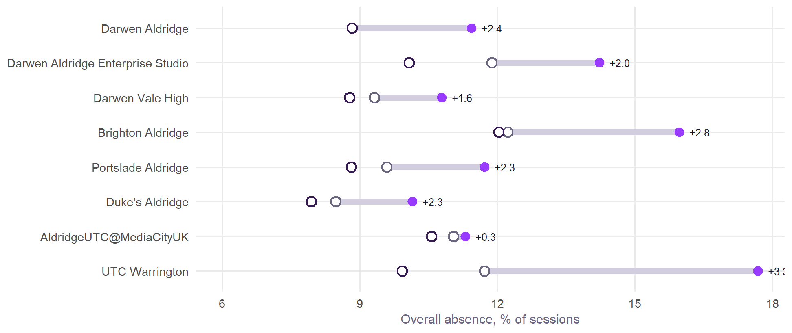
| School | Now | Intake predicts | Best of schools like it | All | Disadv. | Non-disadv. | All | Disadv. | Non-disadv. |
|---|---|---|---|---|---|---|---|---|---|
| Darwen Aldridge | 11.4 | 8.8 | 8.8 | +2.3 | +2.4 | +2.0 | +2.3 | +2.4 | +2.0 |
| Darwen Aldridge Enterprise Studio | 14.2 | 11.9 | 10.1 | +1.5 | +2.0 | +1.2 | +2.9 | +3.9 | +2.4 |
| Darwen Vale High | 10.8 | 9.3 | 8.8 | +1.5 | +1.6 | +1.3 | +2.1 | +2.3 | +1.8 |
| Brighton Aldridge | 16.0 | 12.2 | 12.0 | +2.3 | +2.8 | +2.1 | +2.5 | +3.0 | +2.2 |
| Portslade Aldridge | 11.7 | 9.6 | 8.8 | +2.2 | +2.3 | +1.9 | +3.1 | +3.3 | +2.7 |
| Duke's Aldridge | 10.1 | 8.5 | 7.9 | +1.7 | +2.3 | +1.4 | +2.3 | +3.2 | +1.9 |
| AldridgeUTC@MediaCityUK | 11.3 | 11.0 | 10.6 | +0.2 | +0.3 | +0.2 | +0.6 | +0.8 | +0.5 |
| UTC Warrington | 17.7 | 11.7 | 9.9 | +2.7 | +3.3 | +2.4 | +3.9 | +4.7 | +3.4 |
How to use these. They are ranges for a conversation, not verdicts. A school whose expected and “keep” targets differ by less than its year-to-year spread is doing what it does, and a year above or below says little. The “schools like it” target is the most useful: it is set by real schools with intakes like this one’s. Disadvantaged cohorts are small in several schools, so their targets should be read over two or three years.
Where the points are, and who to ask
A target says where to aim; this says where the points are likely to come from. For each school, each of the things below is compared with the ten schools in England most like it, and put into Attainment 8 points as what it would be worth to match the better quarter of them. These are things a school can work on. They are not the only ones, and how to work on them is for the school: the point is to find schools with similar pupils that are doing well on the same thing, and that might be worth a conversation.
- Attendance: overall absence, worth Attainment 8 through the v2.1 absence elasticity; persistent absence is shown beside it as part of the same lever.
- Subject areas: Progress 8 in English, maths, the three EBacc slots and the three open slots, averaged over the years DfE published it. A point of Progress 8 is a grade in each slot, so the gap times the slots is Attainment 8 points.
- Filling the slots: how many of the three EBacc and three open slots pupils fill. An empty slot scores nothing, so a gap here is worth looking at before subject progress.
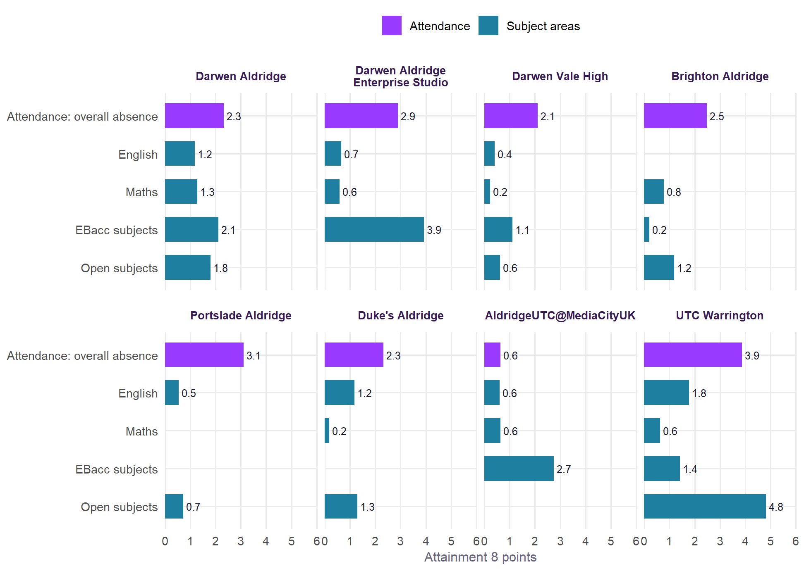
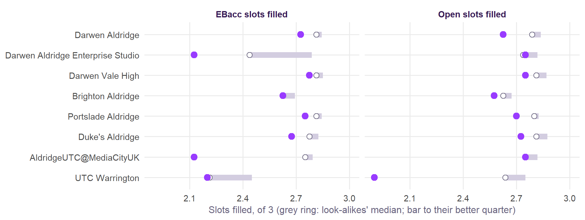
Marginal gains
No single one of these transforms results. Like the marginal gains British Cycling made famous, the case is that several small improvements, each with evidence behind it, add up. Here attendance is joined by three things about a school’s staff that go with its value added across England, beyond what its intake and its pupils’ absence already explain: how many teachers stay from one year to the next, how many days teachers lose to sickness, and how many pupils there are for each qualified teacher.
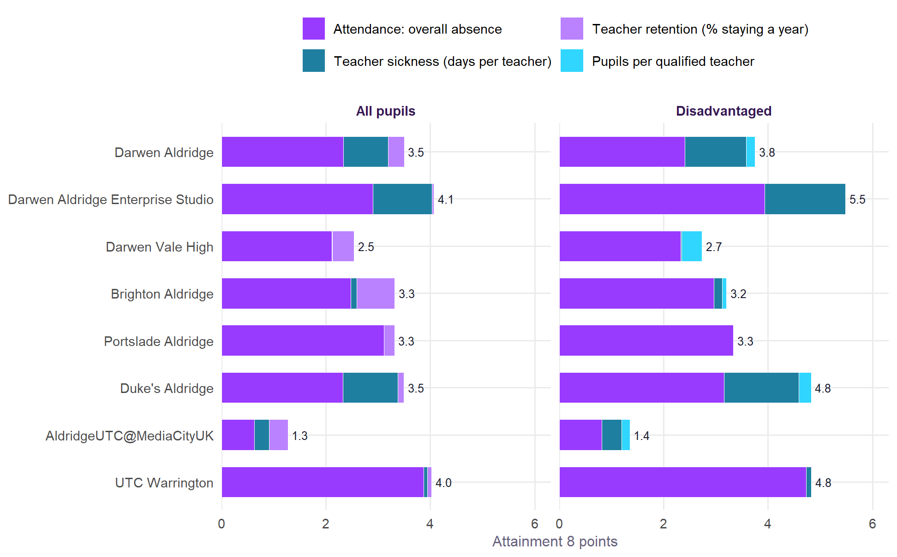
| Measure | All pupils | Disadvantaged | Non-disadvantaged |
|---|---|---|---|
| Teacher sickness, per day per teacher | -0.128 (t -5.7) | -0.175 (t -7.1) | -0.144 (t -6.1) |
| Teacher retention, per percentage point | +0.040 (t 5.7) | – (t -1.5) | +0.049 (t 6.4) |
| Pupils per qualified teacher, per pupil | – (t -0.6) | -0.125 (t -4.6) | – (t 0.3) |
These are associations, and the honest reading is modest. A well-run school both keeps its teachers and gets good results, so part of the link runs the other way. But they are consistent across England’s schools, they are beyond what the intake explains, and they are things a trust can work on: staff wellbeing and sickness, keeping teachers, and staffing levels. Teacher sickness has the clearest link of the three, for every group.
First the constraint, then the margins. Marginal gains, from British Cycling’s “aggregation of marginal gains”, is a management philosophy more than a theory: many small improvements, none decisive alone, adding up. It has a well-known limit. In operations research, the theory of constraints holds that a system moves at the pace of its tightest bottleneck, and that refining everything else first achieves little (Goldratt and Cox, The Goal, 1984); continuous small improvement, or kaizen, works best once that bottleneck is being dealt with (Imai, Kaizen, 1986). Here the bottleneck is clear. For 8 of the 8 schools, attendance is the largest single piece in the chart above, and it sits beside every other lever: pupils who are not in school cannot gain from better teaching, staffing or curriculum. So the order these pages suggest is attendance first, with the staffing and subject gains as the margins that add up around it.
Schools like these
The ten schools in England most like each one, on free school meals, prior attainment, English as an additional language, ethnicity, mobility, sex, special needs, neighbourhood education, size, kind of place, admissions, sixth form, religious character and the age pupils join. Each characteristic is weighted by how much it moves Attainment 8, as on Find a twin.
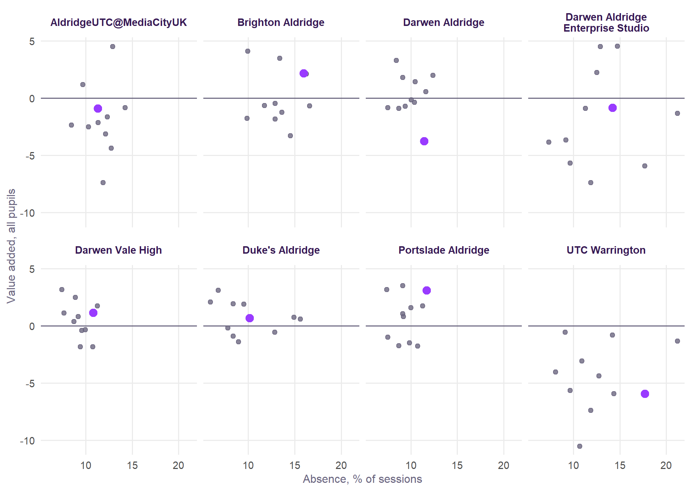
School by school
Darwen Aldridge
Darwen Aldridge Community Academy, Blackburn with Darwen. Ages 11 to 19, 1,065 pupils, 31% on free school meals. Ofsted: Good.
- Value added, four years: -3.7 (-5.4 to -2.1) for all pupils, -4.8 (-7.0 to -2.3) for disadvantaged and -3.4 (-5.2 to -1.4) for non-disadvantaged pupils.
- Attendance: absence 11.4% against 8.8% predicted for its intake; the best quarter of schools like it manage 8.8%.
- Targets, all pupils: expected 41.9 for the latest intake; keep 38.1; schools like it 43.6; England’s top tenth 45.1 (four-year average 38.1).
- Disadvantaged pupils: expected 33.3; schools like it 33.6; top tenth 36.9.
Subject areas, and who to ask. Against the ten schools most like it, the biggest gains in progress are in the EBacc subjects (about 2.1 points), the open subjects (about 1.8 points) and maths (about 1.3 points). Schools with similar pupils that do well on these, and add value overall, might be worth a conversation:
| Lever | This school | Schools like it | Their better quarter | Worth (Att8) | Schools to talk to |
|---|---|---|---|---|---|
| EBacc subjects | -0.79 | -0.19 | -0.08 | +2.1 | Etone College (Warwickshire, +0.21); Meadowhead School Academy Trust (Sheffield, +0.08); King Charles I School (Worcestershire, +0.00) |
| Open subjects | -0.71 | -0.19 | -0.11 | +1.8 | Etone College (Warwickshire, +0.82); Immanuel College (Bradford, +0.55); Meadowhead School Academy Trust (Sheffield, +0.43) |
| Maths | -0.65 | -0.14 | -0.01 | +1.3 | Etone College (Warwickshire, +0.11); Meadowhead School Academy Trust (Sheffield, +0.09); King Charles I School (Worcestershire, +0.01) |
| EBacc slots filled | 2.73 | 2.81 | 2.84 | – | Etone College (Warwickshire, 2.95 slots); Hermitage Academy (County Durham, 2.90 slots); King Charles I School (Worcestershire, 2.85 slots) |
| Open slots filled | 2.62 | 2.79 | 2.84 | – | Etone College (Warwickshire, 2.92 slots); Hermitage Academy (County Durham, 2.92 slots); King Charles I School (Worcestershire, 2.85 slots) |
Marginal gains. Attendance and staffing together could be worth about 3.5 Attainment 8 points for all pupils and 3.8 for disadvantaged pupils, if the school matched the better quarter of schools like it on each:
| Lever | Now | Schools like it, better quarter | Worth, all | Worth, disadvantaged | Schools to talk to |
|---|---|---|---|---|---|
| Attendance: overall absence | 11.4% | 8.8% | +2.3 | +2.4 | Etone College (Warwickshire, 8.5%); Hermitage Academy (County Durham, 8.6%); King Charles I School (Worcestershire, 9.1%) |
| Attendance: persistent absence (part of attendance) | 39.3% | 20.5% | – | – | Hermitage Academy (County Durham, 15.6%); Friesland School (Derbyshire, 20.1%); Consett Academy (County Durham, 20.2%) |
| Teacher sickness (days per teacher) | 10.2 | 3.5 | +0.9 | +1.2 | King Charles I School (Worcestershire, 3.2); Immanuel College (Bradford, 3.6); Richard Rose Central Academy (Cumberland, 4.4) |
| Teacher retention (% staying a year) | 76% | 83% | +0.3 | – | Cannock Chase High School (Staffordshire, 92%); Etone College (Warwickshire, 89%); Meadowhead School Academy Trust (Sheffield, 87%) |
| Pupils per qualified teacher | 18.1 | 16.7 | – | +0.2 | Hermitage Academy (County Durham, 14.6); Bitterne Park School (Southampton, 14.9); Etone College (Warwickshire, 15.1) |
Its closest look-alikes:
| School | Area | FSM | Value added, all | Disadvantaged | Absence |
|---|---|---|---|---|---|
| Magna Academy | Bournemouth, Christchurch and Poole | 24% | -0.7 | +0.9 | 9.4 |
| Richard Rose Central Academy | Cumberland | 31% | +0.6 | +0.5 | 11.6 |
| King Charles I School | Worcestershire | 28% | +1.8 | -0.6 | 9.1 |
| The Long Eaton School | Derbyshire | 34% | -0.4 | -0.1 | 10.4 |
| Friesland School | Derbyshire | 29% | +1.5 | -1.1 | 10.5 |
| Ellowes Hall Sports College | Dudley | 31% | -0.2 | -3.2 | 10.1 |
Darwen Aldridge Enterprise Studio
Darwen Aldridge Enterprise Studio, Blackburn with Darwen. Ages 13 to 19, 264 pupils, 56% on free school meals. Ofsted: Expected standard.
- Value added, four years: -0.8 (-2.3 to +0.7) for all pupils, +3.1 (+0.6 to +5.8) for disadvantaged and -3.1 (-4.8 to -1.4) for non-disadvantaged pupils.
- Attendance: absence 14.2% against 11.9% predicted for its intake; the best quarter of schools like it manage 10.1%.
- Targets, all pupils: expected 33.2 for the latest intake; keep 32.4; schools like it 34.6; England’s top tenth 36.3 (four-year average 35.1).
- Disadvantaged pupils: expected 25.9; schools like it 29.0; top tenth 29.6.
Subject areas, and who to ask. Against the ten schools most like it, the biggest gains in progress are in the EBacc subjects (about 3.9 points), English (about 0.7 points) and maths (about 0.6 points). Schools with similar pupils that do well on these, and add value overall, might be worth a conversation:
| Lever | This school | Schools like it | Their better quarter | Worth (Att8) | Schools to talk to |
|---|---|---|---|---|---|
| EBacc subjects | -1.75 | -1.11 | -0.44 | +3.9 | Granville Academy (Derbyshire, +0.12); Sir John Hunt Community Sports College (Plymouth, -0.07); Broadlands Academy (Bath and North East Somerset, -0.21) |
| English | -0.62 | -0.55 | -0.29 | +0.7 | Granville Academy (Derbyshire, +0.09); Marine Academy Plymouth (Plymouth, -0.02); Sir John Hunt Community Sports College (Plymouth, -0.26) |
| Maths | -0.78 | -0.66 | -0.49 | +0.6 | Granville Academy (Derbyshire, +0.57); Somerset Studio School (Bath and North East Somerset, -0.04); Sir John Hunt Community Sports College (Plymouth, -0.21) |
| EBacc slots filled | 2.12 | 2.44 | 2.79 | – | Sir John Hunt Community Sports College (Plymouth, 2.92 slots); Marine Academy Plymouth (Plymouth, 2.88 slots); Granville Academy (Derbyshire, 2.88 slots) |
| Open slots filled | 2.75 | 2.74 | 2.82 | – | Marine Academy Plymouth (Plymouth, 2.90 slots); Sir John Hunt Community Sports College (Plymouth, 2.88 slots); Granville Academy (Derbyshire, 2.85 slots) |
Marginal gains. Attendance and staffing together could be worth about 4.1 Attainment 8 points for all pupils and 5.5 for disadvantaged pupils, if the school matched the better quarter of schools like it on each:
| Lever | Now | Schools like it, better quarter | Worth, all | Worth, disadvantaged | Schools to talk to |
|---|---|---|---|---|---|
| Attendance: overall absence | 14.2% | 10.1% | +2.9 | +3.9 | Granville Academy (Derbyshire, 7.8%); Christ’s College (Sunderland, 9.2%); Swanwick Hall School (Derbyshire, 11.3%) |
| Attendance: persistent absence (part of attendance) | 52.0% | 28.2% | – | – | Granville Academy (Derbyshire, 17.5%); Christ’s College (Sunderland, 23.6%); Swanwick Hall School (Derbyshire, 23.8%) |
| Teacher sickness (days per teacher) | 12.7 | 3.9 | +1.1 | +1.5 | Christ’s College (Sunderland, 3.9); Marine Academy Plymouth (Plymouth, 4.0); Somerset Studio School (Bath and North East Somerset, 4.4) |
| Teacher retention (% staying a year) | 80% | 81% | +0.0 | – | Sir John Hunt Community Sports College (Plymouth, 88%); Granville Academy (Derbyshire, 83%); Swanwick Hall School (Derbyshire, 80%) |
| Pupils per qualified teacher | 13.6 | 15.6 | – | – | Somerset Studio School (Bath and North East Somerset, 13.4); Sir John Hunt Community Sports College (Plymouth, 13.8); Marine Academy Plymouth (Plymouth, 15.5) |
Its closest look-alikes:
| School | Area | FSM | Value added, all | Disadvantaged | Absence |
|---|---|---|---|---|---|
| UTC Warrington | Warrington | 34% | -5.9 | -2.9 | 17.7 |
| UTC South Durham | County Durham | 32% | -5.7 | -2.6 | 9.7 |
| Sir John Hunt Community Sports College | Plymouth | 43% | +4.6 | +6.0 | 14.7 |
| South Devon UTC | Devon | 35% | -1.3 | -1.7 | 21.2 |
| Bmat Stem Academy | Essex | 28% | -7.4 | -3.5 | 11.9 |
| Marine Academy Plymouth | Plymouth | 43% | +4.5 | +5.2 | 12.9 |
Darwen Vale High
Darwen Vale High School, Blackburn with Darwen. Ages 11 to 16, 1,071 pupils, 31% on free school meals. Ofsted: Good.
- Value added, four years: +1.1 (-0.7 to +3.0) for all pupils, -0.4 (-3.0 to +2.5) for disadvantaged and +1.7 (-0.4 to +3.8) for non-disadvantaged pupils.
- Attendance: absence 10.8% against 9.3% predicted for its intake; the best quarter of schools like it manage 8.8%.
- Targets, all pupils: expected 42.8 for the latest intake; keep 43.9; schools like it 44.4; England’s top tenth 45.9 (four-year average 43.4).
- Disadvantaged pupils: expected 34.4; schools like it 34.8; top tenth 38.0.
Subject areas, and who to ask. Against the ten schools most like it, the biggest gains in progress are in the EBacc subjects (about 1.1 points), the open subjects (about 0.6 points) and English (about 0.4 points). Schools with similar pupils that do well on these, and add value overall, might be worth a conversation:
| Lever | This school | Schools like it | Their better quarter | Worth (Att8) | Schools to talk to |
|---|---|---|---|---|---|
| EBacc subjects | -0.33 | -0.30 | +0.04 | +1.1 | Portslade Aldridge Community Academy (Brighton and Hove, +0.38); Albany Academy (Lancashire, +0.37); Carleton High School (Wakefield, +0.32) |
| Open subjects | -0.18 | -0.20 | +0.02 | +0.6 | Carleton High School (Wakefield, +0.67); Horizon Community College (Barnsley, +0.47); Woodham Academy (County Durham, +0.39) |
| English | -0.28 | -0.23 | -0.08 | +0.4 | Carleton High School (Wakefield, +0.24); Horbury Academy (Wakefield, +0.21); Redmoor Academy (Leicestershire, +0.17) |
| EBacc slots filled | 2.77 | 2.81 | 2.85 | – | Horizon Community College (Barnsley, 2.90 slots); Redmoor Academy (Leicestershire, 2.88 slots); The Heath School (Halton, 2.85 slots) |
| Open slots filled | 2.75 | 2.81 | 2.87 | – | Horizon Community College (Barnsley, 2.90 slots); The Heath School (Halton, 2.88 slots); The Queen Elizabeth Academy (Warwickshire, 2.88 slots) |
Marginal gains. Attendance and staffing together could be worth about 2.5 Attainment 8 points for all pupils and 2.7 for disadvantaged pupils, if the school matched the better quarter of schools like it on each:
| Lever | Now | Schools like it, better quarter | Worth, all | Worth, disadvantaged | Schools to talk to |
|---|---|---|---|---|---|
| Attendance: overall absence | 10.8% | 8.8% | +2.1 | +2.3 | Carleton High School (Wakefield, 7.4%); Horizon Community College (Barnsley, 7.7%); Redmoor Academy (Leicestershire, 8.5%) |
| Attendance: persistent absence (part of attendance) | 29.5% | 21.6% | – | – | Carleton High School (Wakefield, 17.2%); Woodham Academy (County Durham, 19.8%); The Byrchall High School (Wigan, 20.0%) |
| Teacher sickness (days per teacher) | 6.2 | 6.1 | +0.0 | +0.0 | Woodham Academy (County Durham, 3.5); Portslade Aldridge Community Academy (Brighton and Hove, 4.1); Horizon Community College (Barnsley, 5.5) |
| Teacher retention (% staying a year) | 76% | 86% | +0.4 | – | Woodham Academy (County Durham, 92%); St Michael’s Catholic Academy (Stockton-on-Tees, 90%); Redmoor Academy (Leicestershire, 89%) |
| Pupils per qualified teacher | 19.7 | 16.6 | – | +0.4 | Horizon Community College (Barnsley, 16.2); Biddick Academy (Sunderland, 16.4); Woodham Academy (County Durham, 16.5) |
Its closest look-alikes:
| School | Area | FSM | Value added, all | Disadvantaged | Absence |
|---|---|---|---|---|---|
| The Heath School | Halton | 33% | +0.4 | +0.6 | 8.7 |
| Carleton High School | Wakefield | 31% | +3.2 | -1.2 | 7.4 |
| Westfield School | Sheffield | 29% | -0.4 | -3.2 | 9.9 |
| The Queen Elizabeth Academy | Warwickshire | 31% | +1.7 | +0.1 | 11.3 |
| Hawkley Hall High School | Wigan | 27% | -1.8 | -1.9 | 9.4 |
| Testwood School | Hampshire | 31% | -1.8 | -2.4 | 10.7 |
Brighton Aldridge
Brighton Aldridge Community Academy, Brighton and Hove. Ages 11 to 19, 813 pupils, 53% on free school meals. Ofsted: Good.
- Value added, four years: +2.2 (+0.7 to +3.8) for all pupils, +2.4 (+0.1 to +4.9) for disadvantaged and +2.6 (+0.8 to +4.5) for non-disadvantaged pupils.
- Attendance: absence 16.0% against 12.2% predicted for its intake; the best quarter of schools like it manage 12.0%.
- Targets, all pupils: expected 34.0 for the latest intake; keep 36.2; schools like it 36.2; England’s top tenth 37.2 (four-year average 36.8).
- Disadvantaged pupils: expected 27.2; schools like it 29.6; top tenth 30.8.
Subject areas, and who to ask. Against the ten schools most like it, the biggest gains in progress are in the open subjects (about 1.2 points), maths (about 0.8 points) and the EBacc subjects (about 0.2 points). Schools with similar pupils that do well on these, and add value overall, might be worth a conversation:
| Lever | This school | Schools like it | Their better quarter | Worth (Att8) | Schools to talk to |
|---|---|---|---|---|---|
| Open subjects | -0.62 | -0.54 | -0.22 | +1.2 | Henley Bank High School (Gloucestershire, +0.75); Lipson Co-operative Academy (Plymouth, +0.45); Stoke Damerel Community College (Plymouth, +0.31) |
| Maths | -0.58 | -0.61 | -0.19 | +0.8 | Henley Bank High School (Gloucestershire, +0.82); Fearnhill School (Hertfordshire, +0.24); Royds Hall, A Share Academy (Kirklees, +0.18) |
| EBacc subjects | -0.51 | -0.73 | -0.44 | +0.2 | Henley Bank High School (Gloucestershire, +0.96); Fearnhill School (Hertfordshire, +0.38); Lipson Co-operative Academy (Plymouth, -0.09) |
| EBacc slots filled | 2.62 | 2.62 | 2.69 | – | Lipson Co-operative Academy (Plymouth, 2.90 slots); Henley Bank High School (Gloucestershire, 2.88 slots); Fearnhill School (Hertfordshire, 2.77 slots) |
| Open slots filled | 2.58 | 2.62 | 2.67 | – | Henley Bank High School (Gloucestershire, 2.90 slots); Lipson Co-operative Academy (Plymouth, 2.88 slots); Royds Hall, A Share Academy (Kirklees, 2.85 slots) |
Marginal gains. Attendance and staffing together could be worth about 3.3 Attainment 8 points for all pupils and 3.2 for disadvantaged pupils, if the school matched the better quarter of schools like it on each:
| Lever | Now | Schools like it, better quarter | Worth, all | Worth, disadvantaged | Schools to talk to |
|---|---|---|---|---|---|
| Attendance: overall absence | 16.0% | 12.0% | +2.5 | +3.0 | Royds Hall, A Share Academy (Kirklees, 6.8%); Lipson Co-operative Academy (Plymouth, 9.9%); Henley Bank High School (Gloucestershire, 10.1%) |
| Attendance: persistent absence (part of attendance) | 39.0% | 27.6% | – | – | Royds Hall, A Share Academy (Kirklees, 16.3%); Fearnhill School (Hertfordshire, 25.2%); Henley Bank High School (Gloucestershire, 26.7%) |
| Teacher sickness (days per teacher) | 7.2 | 6.3 | +0.1 | +0.2 | Henley Bank High School (Gloucestershire, 3.8); Broadlands Academy (Bath and North East Somerset, 5.5); Fearnhill School (Hertfordshire, 5.8) |
| Teacher retention (% staying a year) | 68% | 87% | +0.7 | – | Stoke Damerel Community College (Plymouth, 90%); Lipson Co-operative Academy (Plymouth, 90%); Henley Bank High School (Gloucestershire, 84%) |
| Pupils per qualified teacher | 16.8 | 16.1 | – | +0.1 | Stoke Damerel Community College (Plymouth, 14.9); Fearnhill School (Hertfordshire, 14.9); Lipson Co-operative Academy (Plymouth, 15.6) |
Its closest look-alikes:
| School | Area | FSM | Value added, all | Disadvantaged | Absence |
|---|---|---|---|---|---|
| Oasis Academy Brightstowe | Bristol, City of | 49% | -0.7 | -0.4 | 16.6 |
| Ellesmere Port Church of England College | Cheshire West and Chester | 43% | -1.8 | -1.9 | 9.9 |
| Lipson Co-operative Academy | Plymouth | 40% | +4.1 | +4.3 | 9.9 |
| Miltoncross Academy | Portsmouth | 47% | -1.8 | -1.3 | 12.9 |
| Dixons Brooklands Academy | Manchester | 52% | +2.1 | +3.5 | 16.2 |
| The Open Academy | Norfolk | 40% | -0.6 | +1.2 | 11.7 |
Portslade Aldridge
Portslade Aldridge Community Academy, Brighton and Hove. Ages 11 to 16, 928 pupils, 30% on free school meals. Ofsted: Expected standard.
- Value added, four years: +3.1 (+1.2 to +5.1) for all pupils, +0.7 (-2.0 to +3.5) for disadvantaged and +3.4 (+1.2 to +5.6) for non-disadvantaged pupils.
- Attendance: absence 11.7% against 9.6% predicted for its intake; the best quarter of schools like it manage 8.8%.
- Targets, all pupils: expected 41.8 for the latest intake; keep 44.9; schools like it 44.9; England’s top tenth 45.0 (four-year average 45.9).
- Disadvantaged pupils: expected 32.7; schools like it 33.4; top tenth 36.4.
Subject areas, and who to ask. Against the ten schools most like it, the biggest gains in progress are in the open subjects (about 0.7 points) and English (about 0.5 points). Schools with similar pupils that do well on these, and add value overall, might be worth a conversation:
| Lever | This school | Schools like it | Their better quarter | Worth (Att8) | Schools to talk to |
|---|---|---|---|---|---|
| Open subjects | -0.27 | -0.18 | -0.03 | +0.7 | Carleton High School (Wakefield, +0.67); Horbury Academy (Wakefield, +0.38); Lowton Church of England High School (Wigan, +0.02) |
| English | -0.29 | -0.20 | -0.02 | +0.5 | Carleton High School (Wakefield, +0.24); Horbury Academy (Wakefield, +0.21); Alder Community High School (Tameside, -0.00) |
| EBacc slots filled | 2.75 | 2.81 | 2.84 | – | Stockport School (Stockport, 2.90 slots); Belvidere School (Shropshire, 2.85 slots); The Hamble School (Hampshire, 2.85 slots) |
| Open slots filled | 2.70 | 2.80 | 2.82 | – | Lowton Church of England High School (Wigan, 2.88 slots); The Queen Elizabeth Academy (Warwickshire, 2.88 slots); The Heath School (Halton, 2.88 slots) |
Marginal gains. Attendance and staffing together could be worth about 3.3 Attainment 8 points for all pupils and 3.3 for disadvantaged pupils, if the school matched the better quarter of schools like it on each:
| Lever | Now | Schools like it, better quarter | Worth, all | Worth, disadvantaged | Schools to talk to |
|---|---|---|---|---|---|
| Attendance: overall absence | 11.7% | 8.8% | +3.1 | +3.3 | Carleton High School (Wakefield, 7.4%); The Heath School (Halton, 8.7%); Albany Academy (Lancashire, 8.8%) |
| Attendance: persistent absence (part of attendance) | 24.4% | 20.1% | – | – | Carleton High School (Wakefield, 17.2%); The Byrchall High School (Wigan, 20.0%); Horbury Academy (Wakefield, 22.8%) |
| Teacher sickness (days per teacher) | 4.1 | 6.1 | – | – | Wey Valley Academy (Dorset, 1.5); The Byrchall High School (Wigan, 5.6); Lowton Church of England High School (Wigan, 5.8) |
| Teacher retention (% staying a year) | 82% | 87% | +0.2 | – | Stockport School (Stockport, 92%); Albany Academy (Lancashire, 89%); The Heath School (Halton, 86%) |
| Pupils per qualified teacher | 16.7 | 17.3 | – | – | Stockport School (Stockport, 16.1); Belvidere School (Shropshire, 16.5); The Hamble School (Hampshire, 16.8) |
Its closest look-alikes:
| School | Area | FSM | Value added, all | Disadvantaged | Absence |
|---|---|---|---|---|---|
| The Hamble School | Hampshire | 26% | +1.6 | +0.2 | 10.0 |
| Stanley High School | Sefton | 27% | -1.8 | -0.7 | 10.7 |
| King James’s School | Kirklees | 29% | -1.0 | -4.2 | 7.5 |
| Penketh High School | Warrington | 28% | -1.8 | -1.3 | 8.7 |
| Lowton Church of England High School | Wigan | 30% | +1.0 | +0.7 | 9.1 |
| Alder Community High School | Tameside | 30% | +0.8 | -0.6 | 9.2 |
Duke’s Aldridge
Duke’s Aldridge, Haringey. Ages 11 to 16, 965 pupils, 49% on free school meals. Ofsted: Good.
- Value added, four years: +0.7 (-1.0 to +2.4) for all pupils, +3.3 (+0.4 to +6.4) for disadvantaged and -1.6 (-3.4 to +0.4) for non-disadvantaged pupils.
- Attendance: absence 10.1% against 8.5% predicted for its intake; the best quarter of schools like it manage 7.9%.
- Targets, all pupils: expected 38.9 for the latest intake; keep 39.5; schools like it 40.8; England’s top tenth 42.0 (four-year average 40.2).
- Disadvantaged pupils: expected 32.9; schools like it 36.2; top tenth 36.6.
Subject areas, and who to ask. Against the ten schools most like it, the biggest gains in progress are in the open subjects (about 1.3 points), English (about 1.2 points) and maths (about 0.2 points). Schools with similar pupils that do well on these, and add value overall, might be worth a conversation:
| Lever | This school | Schools like it | Their better quarter | Worth (Att8) | Schools to talk to |
|---|---|---|---|---|---|
| Open subjects | -0.07 | -0.08 | +0.36 | +1.3 | Moor End Academy (Kirklees, +0.84); Carlton Bolling (Bradford, +0.84); Essa Academy (Bolton, +0.49) |
| English | -0.31 | -0.02 | +0.28 | +1.2 | Ark Elvin Academy (Brent, +0.64); Starbank School (Birmingham, +0.62); Moor End Academy (Kirklees, +0.56) |
| Maths | +0.44 | +0.20 | +0.54 | +0.2 | Moor End Academy (Kirklees, +0.62); Ark Elvin Academy (Brent, +0.62); Harlington School (Hillingdon, +0.51) |
| EBacc slots filled | 2.67 | 2.77 | 2.83 | – | Ark Elvin Academy (Brent, 2.85 slots); Moor End Academy (Kirklees, 2.85 slots); Matthew Moss High School (Rochdale, 2.85 slots) |
| Open slots filled | 2.73 | 2.81 | 2.88 | – | Essa Academy (Bolton, 2.95 slots); Moor End Academy (Kirklees, 2.92 slots); Westborough High School (Kirklees, 2.90 slots) |
Marginal gains. Attendance and staffing together could be worth about 3.5 Attainment 8 points for all pupils and 4.8 for disadvantaged pupils, if the school matched the better quarter of schools like it on each:
| Lever | Now | Schools like it, better quarter | Worth, all | Worth, disadvantaged | Schools to talk to |
|---|---|---|---|---|---|
| Attendance: overall absence | 10.1% | 7.9% | +2.3 | +3.2 | Essa Academy (Bolton, 5.9%); Moor End Academy (Kirklees, 6.8%); Starbank School (Birmingham, 7.8%) |
| Attendance: persistent absence (part of attendance) | 27.8% | 19.4% | – | – | Moor End Academy (Kirklees, 15.3%); Carlton Bolling (Bradford, 22.2%); Bedford Academy (Bedford, 23.1%) |
| Teacher sickness (days per teacher) | 12.7 | 4.6 | +1.0 | +1.4 | Starbank School (Birmingham, 3.1); Ark Elvin Academy (Brent, 3.8); Essa Academy (Bolton, 3.8) |
| Teacher retention (% staying a year) | 79% | 82% | +0.1 | – | Westborough High School (Kirklees, 83%); Bedford Academy (Bedford, 82%); Harlington School (Hillingdon, 81%) |
| Pupils per qualified teacher | 17.8 | 15.9 | – | +0.2 | Westborough High School (Kirklees, 13.8); Carlton Bolling (Bradford, 14.9); Oasis Academy Lister Park (Bradford, 15.8) |
Its closest look-alikes:
| School | Area | FSM | Value added, all | Disadvantaged | Absence |
|---|---|---|---|---|---|
| Marsden Heights Community College | Lancashire | 35% | -0.9 | +0.0 | 8.4 |
| Ark Elvin Academy | Brent | 42% | +1.9 | +4.2 | 8.4 |
| Carlton Bolling | Bradford | 46% | +1.9 | +3.4 | 9.5 |
| Moor End Academy | Kirklees | 48% | +3.1 | +2.9 | 6.8 |
| Sir John Thursby Community College | Lancashire | 43% | -1.4 | -0.5 | 8.9 |
| One In A Million Free School | Bradford | 53% | -0.6 | -1.7 | 12.9 |
AldridgeUTC@MediaCityUK
AldridgeUTC@MediaCityUK, Salford. Ages 13 to 19, 456 pupils, 46% on free school meals. Ofsted: Good.
- Value added, four years: -0.9 (-2.6 to +0.9) for all pupils, +3.0 (+0.2 to +6.0) for disadvantaged and -2.7 (-4.6 to -0.8) for non-disadvantaged pupils.
- Attendance: absence 11.3% against 11.0% predicted for its intake; the best quarter of schools like it manage 10.6%.
- Targets, all pupils: expected 40.9 for the latest intake; keep 40.1; schools like it 40.1; England’s top tenth 44.1 (four-year average 40.4).
- Disadvantaged pupils: expected 32.5; schools like it 35.5; top tenth 36.2.
Subject areas, and who to ask. Against the ten schools most like it, the biggest gains in progress are in the EBacc subjects (about 2.7 points), maths (about 0.6 points) and English (about 0.6 points). Schools with similar pupils that do well on these, and add value overall, might be worth a conversation:
| Lever | This school | Schools like it | Their better quarter | Worth (Att8) | Schools to talk to |
|---|---|---|---|---|---|
| EBacc subjects | -1.44 | -0.67 | -0.52 | +2.7 | Fearnhill School (Hertfordshire, +0.38); St Benedict’s Catholic High School (Warwickshire, +0.26); Queen’s Park High School (Cheshire West and Chester, +0.17) |
| Maths | -0.65 | -0.45 | -0.34 | +0.6 | Fearnhill School (Hertfordshire, +0.24); Scott Medical and Healthcare College (Plymouth, +0.24); St Benedict’s Catholic High School (Warwickshire, +0.06) |
| English | -0.56 | -0.47 | -0.26 | +0.6 | St Benedict’s Catholic High School (Warwickshire, +0.26); Scott Medical and Healthcare College (Plymouth, +0.24); Queen’s Park High School (Cheshire West and Chester, +0.21) |
| EBacc slots filled | 2.12 | 2.75 | 2.79 | – | Scott Medical and Healthcare College (Plymouth, 2.90 slots); Marine Academy Plymouth (Plymouth, 2.88 slots); Queen’s Park High School (Cheshire West and Chester, 2.85 slots) |
| Open slots filled | 2.75 | 2.75 | 2.82 | – | Marine Academy Plymouth (Plymouth, 2.90 slots); Queen’s Park High School (Cheshire West and Chester, 2.82 slots); St Benedict’s Catholic High School (Warwickshire, 2.80 slots) |
Marginal gains. Attendance and staffing together could be worth about 1.3 Attainment 8 points for all pupils and 1.4 for disadvantaged pupils, if the school matched the better quarter of schools like it on each:
| Lever | Now | Schools like it, better quarter | Worth, all | Worth, disadvantaged | Schools to talk to |
|---|---|---|---|---|---|
| Attendance: overall absence | 11.3% | 10.6% | +0.6 | +0.8 | St Benedict’s Catholic High School (Warwickshire, 9.3%); Queen’s Park High School (Cheshire West and Chester, 9.7%); Fearnhill School (Hertfordshire, 10.6%) |
| Attendance: persistent absence (part of attendance) | 37.1% | 25.0% | – | – | St Benedict’s Catholic High School (Warwickshire, 21.3%); Queen’s Park High School (Cheshire West and Chester, 23.4%); Laureate Academy (Hertfordshire, 25.0%) |
| Teacher sickness (days per teacher) | 7.6 | 5.4 | +0.3 | +0.4 | Laureate Academy (Hertfordshire, 3.7); Marine Academy Plymouth (Plymouth, 4.0); Queen’s Park High School (Cheshire West and Chester, 5.6) |
| Teacher retention (% staying a year) | 71% | 80% | +0.4 | – | The Studio School Liverpool (Liverpool, 90%); Hove Park School and Sixth Form Centre (Brighton and Hove, 88%); Queen’s Park High School (Cheshire West and Chester, 85%) |
| Pupils per qualified teacher | 17.2 | 16.0 | – | +0.2 | Hove Park School and Sixth Form Centre (Brighton and Hove, 14.7); Fearnhill School (Hertfordshire, 14.9); Marine Academy Plymouth (Plymouth, 15.5) |
Its closest look-alikes:
| School | Area | FSM | Value added, all | Disadvantaged | Absence |
|---|---|---|---|---|---|
| The Sele School | Hertfordshire | 32% | -1.6 | +0.2 | 12.3 |
| Nether Stowe School | Staffordshire | 35% | -2.1 | -1.7 | 11.3 |
| University Technical College Norfolk | Norfolk | 24% | -2.3 | +2.9 | 8.5 |
| Queen’s Park High School | Cheshire West and Chester | 26% | +1.2 | -3.5 | 9.7 |
| Bmat Stem Academy | Essex | 28% | -7.4 | -3.5 | 11.9 |
| The Radcliffe School | Milton Keynes | 39% | -2.5 | -2.4 | 10.3 |
UTC Warrington
UTC Warrington, Warrington. Ages 14 to 19, 296 pupils, 53% on free school meals. Ofsted: Good.
- Value added, four years: -5.9 (-7.1 to -4.7) for all pupils, -2.9 (-4.7 to -0.9) for disadvantaged and -7.2 (-8.5 to -5.8) for non-disadvantaged pupils.
- Attendance: absence 17.7% against 11.7% predicted for its intake; the best quarter of schools like it manage 9.9%.
- Targets, all pupils: expected 32.9 for the latest intake; keep 27.0; schools like it 31.1; England’s top tenth 36.1 (four-year average 27.2).
- Disadvantaged pupils: expected 26.0; schools like it 24.6; top tenth 29.7.
Subject areas, and who to ask. Against the ten schools most like it, the biggest gains in progress are in the open subjects (about 4.8 points), English (about 1.8 points) and the EBacc subjects (about 1.4 points). Schools with similar pupils that do well on these, and add value overall, might be worth a conversation:
| Lever | This school | Schools like it | Their better quarter | Worth (Att8) | Schools to talk to |
|---|---|---|---|---|---|
| Open subjects | -2.21 | -1.19 | -0.60 | +4.8 | Henley Bank High School (Gloucestershire, +0.75); Marriotts School (Hertfordshire, +0.29); Scarborough University Technical College (North Yorkshire, +0.20) |
| English | -1.50 | -0.96 | -0.61 | +1.8 | Henley Bank High School (Gloucestershire, +0.47); Holmleigh Park High School (Gloucestershire, -0.14); Broadlands Academy (Bath and North East Somerset, -0.30) |
| EBacc subjects | -1.45 | -1.40 | -0.98 | +1.4 | Henley Bank High School (Gloucestershire, +0.96); Holmleigh Park High School (Gloucestershire, +0.14); Broadlands Academy (Bath and North East Somerset, -0.21) |
| EBacc slots filled | 2.20 | 2.21 | 2.45 | – | Henley Bank High School (Gloucestershire, 2.88 slots); Holmleigh Park High School (Gloucestershire, 2.82 slots); Scarborough University Technical College (North Yorkshire, 2.80 slots) |
| Open slots filled | 1.90 | 2.64 | 2.75 | – | Henley Bank High School (Gloucestershire, 2.90 slots); Scarborough University Technical College (North Yorkshire, 2.85 slots); Holmleigh Park High School (Gloucestershire, 2.80 slots) |
Marginal gains. Attendance and staffing together could be worth about 4.0 Attainment 8 points for all pupils and 4.8 for disadvantaged pupils, if the school matched the better quarter of schools like it on each:
| Lever | Now | Schools like it, better quarter | Worth, all | Worth, disadvantaged | Schools to talk to |
|---|---|---|---|---|---|
| Attendance: overall absence | 17.7% | 9.9% | +3.9 | +4.7 | Marriotts School (Hertfordshire, 9.5%); Henley Bank High School (Gloucestershire, 10.1%); Scarborough University Technical College (North Yorkshire, 10.8%) |
| Attendance: persistent absence (part of attendance) | 42.9% | 24.9% | – | – | Marriotts School (Hertfordshire, 21.9%); Scarborough University Technical College (North Yorkshire, 24.4%); Henley Bank High School (Gloucestershire, 26.7%) |
| Teacher sickness (days per teacher) | 5.4 | 4.8 | +0.1 | +0.1 | Henley Bank High School (Gloucestershire, 3.8); Walsall Studio School (Walsall, 4.1); Holmleigh Park High School (Gloucestershire, 5.4) |
| Teacher retention (% staying a year) | 79% | 81% | +0.1 | – | Marriotts School (Hertfordshire, 87%); Holmleigh Park High School (Gloucestershire, 87%); St John Henry Newman Catholic School (Cumberland, 85%) |
| Pupils per qualified teacher | 15.8 | 16.2 | – | – | Scarborough University Technical College (North Yorkshire, 12.8); Walsall Studio School (Walsall, 12.9); Broadlands Academy (Bath and North East Somerset, 15.8) |
Its closest look-alikes:
| School | Area | FSM | Value added, all | Disadvantaged | Absence |
|---|---|---|---|---|---|
| Darwen Aldridge Enterprise Studio | Blackburn with Darwen | 41% | -0.8 | +3.1 | 14.2 |
| Crewe Engineering and Design UTC | Cheshire East | 29% | -5.9 | -2.7 | 14.4 |
| South Devon UTC | Devon | 35% | -1.3 | -1.7 | 21.2 |
| Engineering UTC Northern Lincolnshire | North Lincolnshire | 36% | -3.1 | -0.0 | 10.9 |
| King’s Oak Academy | South Gloucestershire | 29% | -0.6 | -2.6 | 9.1 |
| Bmat Stem Academy | Essex | 28% | -7.4 | -3.5 | 11.9 |
How these figures are made
R/35_trust_summary.R writes data/trust_aldridge_education.rds; any trust can be run by name.
- The schools are the trust’s open secondary schools in Get Information About Schools (June 2026). Its primary school has no KS4 results and is not included.
- Value added is Value Added v2.1: Attainment 8 for each group against what the model expects for its intake, four years pooled and shrunk, with 95% intervals. Yearly figures are unshrunk. 2025/26 is provisional.
- Expected Attainment 8 is the model’s prediction for the school’s pupils in that year, with no school effect: intake, context, absence and place. The latest is 2024/25.
- Absence against intake is from the site’s absence model (what goes with absence): each school’s overall absence against what its intake predicts, averaged over 2021/22 to 2024/25 (the value-added model’s years).
- Look-alikes use the matching of Find a twin: a weighted Gower-type distance over the characteristics listed above, each numeric gap in standard deviations capped at three, categories as match or not, weighted by the spread of each characteristic’s contribution in a regression of Attainment 8 on all of them. The age pupils join is added here, so that UTCs and studio schools are matched with schools like them.
- Targets are \(\hat{A}_{2024/25} + \max(\text{VA}_{\text{own}}, \text{VA}_{\text{level}})\), where \(\hat{A}\) is the expected Attainment 8 for the latest intake and the level is the school’s own four-year value added, the 75th percentile of its look-alikes’ value added, or England’s 90th percentile for the group.
- What absence is worth uses the v2.1 elasticity of Attainment 8 on absence for each group, \(\varepsilon\): moving from absence \(a\) to \(a'\) changes Attainment 8 by \(A\left[(a'/a)^{\varepsilon} - 1\right]\), as on the area pages.
- Subject areas use Progress 8 by element (English, maths, EBacc, open) from the KS4 performance tables, averaged over the years DfE published it in 2021/22 to 2024/25. A point of Progress 8 in an element is a grade in each of its slots, so the gap to the look-alikes’ better quarter, times the element’s slots (2, 2, 3, 3), is Attainment 8 points. Slots filled are DfE’s average EBacc and open slots filled. These overlap with value added and with each other; they show where, not how much more.
- Staffing uses DfE’s School Workforce in England, school level, 2021/22 to 2024/25 (
R/36_workforce.R): teacher retention (the share of teachers in post who were in the same school a year later), average days of sickness absence per teacher, and pupils per qualified teacher. Their links with Value Added v2.1 across England are fitted together, so they do not double count, and are beyond intake and absence, which value added already allows for. A piece counts for a group only where its link is clear (|t| ≥ 2). Teaching assistants per teacher and leadership pay were left out because they mostly reflect who a school serves; the share of teachers taking any sickness was left out because it only means something given total days. - Marginal gains add attendance (through the absence elasticity) and the staffing pieces (through their joint link), each at the look-alikes’ better quarter. Adding is fair because the staffing links are beyond absence; it is still an association, and part of it runs the other way.
- Schools to talk to are, for each lever, the three of the 25 schools most like the school that are best on that lever and whose value added for all pupils is at least England’s median, so each is doing well overall, not only on the one thing.
- Limits. Targets assume next year’s intake is like the last. Value added is an association with what schools do, not a measure of teaching alone, and small cohorts swing.